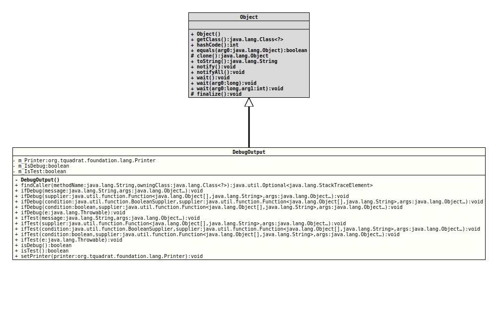

Some functions for DEBUG and TEST output to the console.
- Author:
- Thomas Thrien (thomas.thrien@tquadrat.org)
- Version:
- $Id: DebugOutput.java 1031 2022-04-07 22:43:02Z tquadrat $
- Since:
- 0.1.0
- UML Diagram
-

UML Diagram for "org.tquadrat.foundation.lang.DebugOutput"
{kind=link}
-
Field Summary
Fields -
Constructor Summary
Constructors -
Method Summary
Modifier and TypeMethodDescriptionstatic final voiddebugOutput(boolean condition, Function<Object[], String> supplier, Object... args) Deprecated, for removal: This API element is subject to removal in a future version.static final voidDeprecated, for removal: This API element is subject to removal in a future version.UseifDebug(Throwable)instead.static final voiddebugOutput(BooleanSupplier condition, Function<Object[], String> supplier, Object... args) Deprecated, for removal: This API element is subject to removal in a future version.UseifDebug(BooleanSupplier, Function, Object...)instead.static final voiddebugOutput(Function<Object[], String> supplier, Object... args) Deprecated, for removal: This API element is subject to removal in a future version.UseifDebug(Function, Object...)instead.static final Optional<StackTraceElement>findCaller(String methodName, Class<?> owningClass) This method will find the caller for the method that is identified by its name and class, and returns the appropriate stack trace element.static final voidIf the System property "isDebug" is set and the given condition resolves totrue, execute the givenFunctionand call the specifiedPrinterto write the result.static final voidstatic final voidstatic final voidIf the System property "isDebug" is set and the givenconditionresolves totrue, execute the givenFunctionand call the specifiedPrinterto write result.static final voidstatic final voidIf the System property "isTest" is set and the given condition resolves totrue, execute the givenSupplierand call the specifiedPrinterto write the result.static final voidstatic final voidstatic final voidIf the System property "isTest" is set and the givenconditionresolves totrue, execute the givenFunctionand call the specifiedPrinterto write the result.static final voidIf the System property "isTest" is set, execute the givenFunctionand call the specifiedPrinterto write the result.static final booleanisDebug()Returns the DEBUG flag.static final booleanisTest()Returns the TEST flag.static final voidsetPrinter(Printer printer) Assigns thePrinterfor the DEBUG/TEST output.static final voidtestOutput(boolean condition, Function<Object[], String> supplier, Object... args) Deprecated, for removal: This API element is subject to removal in a future version.UseifTest(boolean, Function, Object...)instead.static final voidDeprecated, for removal: This API element is subject to removal in a future version.UseifTest(Throwable)instead.static final voidtestOutput(BooleanSupplier condition, Function<Object[], String> supplier, Object... args) Deprecated, for removal: This API element is subject to removal in a future version.UseifTest(BooleanSupplier, Function, Object...)} instead.static final voidtestOutput(Function<Object[], String> supplier, Object... args) Deprecated, for removal: This API element is subject to removal in a future version.UseifTest(Function, Object...)instead.
-
Field Details
-
m_Printer
The printer. -
m_IsDebug
The DEBUG flag.- See Also:
-
m_IsTest
The TEST flag.- See Also:
-
-
Constructor Details
-
DebugOutput
private DebugOutput()No instance is allowed for this class!
-
-
Method Details
-
debugOutput
@Deprecated(since="0.1.0", forRemoval=true) @API(status=DEPRECATED, since="0.1.0") public static final void debugOutput(Function<Object[], String> supplier, Object... args) Deprecated, for removal: This API element is subject to removal in a future version.UseifDebug(Function, Object...)instead.If the System property "isDebug" is set, execute the givenFunctionand write the result toSystem.out.- Parameters:
supplier- TheFunctionfor the output.args- Optional argument for thesupplier.
-
debugOutput
@Deprecated(since="0.1.0", forRemoval=true) @API(status=DEPRECATED, since="0.1.0") public static final void debugOutput(BooleanSupplier condition, Function<Object[], String> supplier, Object... args) Deprecated, for removal: This API element is subject to removal in a future version.UseifDebug(BooleanSupplier, Function, Object...)instead.If the System property "isDebug" is set and the givenconditionresolves totrue, execute the givenFunctionand write the result toSystem.out.- Parameters:
condition- Only iftrue, there will be an output.supplier- TheSupplierfor the output.args- Optional argument for thesupplier.
-
debugOutput
@Deprecated(since="0.1.0", forRemoval=true) @API(status=DEPRECATED, since="0.1.0") public static final void debugOutput(boolean condition, Function<Object[], String> supplier, Object... args) Deprecated, for removal: This API element is subject to removal in a future version.UseifDebug(boolean, Function, Object...)instead.If the System property "isDebug" is set and the given condition resolves totrue, execute the givenFunctionand write the result toSystem.out.- Parameters:
condition- Only iftrue, there will be an output.supplier- TheSupplierfor the output.args- Optional argument for thesupplier.
-
debugOutput
@Deprecated(since="0.1.0", forRemoval=true) @API(status=DEPRECATED, since="0.1.0") public static final void debugOutput(Throwable e) Deprecated, for removal: This API element is subject to removal in a future version.UseifDebug(Throwable)instead.If the System property "isDebug" is set, a call to
e.printStackTrace( out )is made.Use this to get a view to an otherwise ignored exception.
- Parameters:
e- The exception.
-
findCaller
@API(status=STABLE, since="0.1.0") public static final Optional<StackTraceElement> findCaller(String methodName, Class<?> owningClass) This method will find the caller for the method that is identified by its name and class, and returns the appropriate stack trace element.
The return value is empty when the provided method is not on the stack trace.
- Parameters:
methodName- The name of the method that we need the caller for.owningClass- The class for the called method.- Returns:
- An instance of
Optionalthat holds the stack trace element for the caller.
-
ifDebug
- Parameters:
message- The message; it is a format as defined forFormatter.args- Optional argument for thesupplier.- See Also:
-
ifDebug
@API(status=STABLE, since="0.1.0") public static final void ifDebug(Function<Object[], String> supplier, Object... args) - Parameters:
supplier- TheFunctionfor the output.args- Optional argument for thesupplier.- See Also:
-
ifDebug
@API(status=STABLE, since="0.1.0") public static final void ifDebug(BooleanSupplier condition, Function<Object[], String> supplier, Object... args) If the System property "isDebug" is set and the givenconditionresolves totrue, execute the givenFunctionand call the specifiedPrinterto write result.- Parameters:
condition- Only iftrue, there will be an output.supplier- TheSupplierfor the output.args- Optional argument for thesupplier.- See Also:
-
ifDebug
@API(status=STABLE, since="0.1.0") public static final void ifDebug(boolean condition, Function<Object[], String> supplier, Object... args) If the System property "isDebug" is set and the given condition resolves totrue, execute the givenFunctionand call the specifiedPrinterto write the result.- Parameters:
condition- Only iftrue, there will be an output.supplier- TheSupplierfor the output.args- Optional argument for thesupplier.- See Also:
-
ifDebug
If the System property "isDebug" is set, a call to
e.printStackTrace()is made.Use this to provide a view to an otherwise ignored exception.
- Parameters:
e- The exception.- See Also:
-
ifTest
- Parameters:
message- The message; it is a format as defined forFormatter.args- Optional argument for thesupplier.- See Also:
-
ifTest
@API(status=STABLE, since="0.1.0") public static final void ifTest(Function<Object[], String> supplier, Object... args) If the System property "isTest" is set, execute the givenFunctionand call the specifiedPrinterto write the result.- Parameters:
supplier- TheSupplierfor the output.args- Optional argument for thesupplier.- See Also:
-
ifTest
@API(status=STABLE, since="0.1.0") public static final void ifTest(BooleanSupplier condition, Function<Object[], String> supplier, Object... args) If the System property "isTest" is set and the givenconditionresolves totrue, execute the givenFunctionand call the specifiedPrinterto write the result.- Parameters:
condition- Only iftrue, there will be an output.supplier- TheSupplierfor the output.args- Optional argument for thesupplier.- See Also:
-
ifTest
@API(status=STABLE, since="0.1.0") public static final void ifTest(boolean condition, Function<Object[], String> supplier, Object... args) If the System property "isTest" is set and the given condition resolves totrue, execute the givenSupplierand call the specifiedPrinterto write the result.- Parameters:
condition- Only iftrue, there will be an output.supplier- TheSupplierfor the output.args- Optional argument for thesupplier.- See Also:
-
ifTest
If the System property "isTest" is set, a call to
e.printStackTrace()is made.Use this to get a view to an otherwise ignored exception.
- Parameters:
e- The exception.- See Also:
-
isDebug
Returns the DEBUG flag.- Returns:
trueif the DEBUG flag is set,falseotherwise.- See Also:
-
isTest
Returns the TEST flag.- Returns:
trueif the TEST flag is set,falseotherwise.- See Also:
-
setPrinter
Assigns the
Printerfor the DEBUG/TEST output.The default implementation writes to
System.out.- Parameters:
printer- The printer
-
testOutput
@Deprecated(since="0.1.0", forRemoval=true) @API(status=DEPRECATED, since="0.1.0") public static final void testOutput(Function<Object[], String> supplier, Object... args) Deprecated, for removal: This API element is subject to removal in a future version.UseifTest(Function, Object...)instead.If the System property "isTest" is set, execute the givenFunctionand write the result toSystem.out.- Parameters:
supplier- TheSupplierfor the output.args- Optional argument for thesupplier.
-
testOutput
@Deprecated(since="0.1.0", forRemoval=true) @API(status=DEPRECATED, since="0.1.0") public static final void testOutput(BooleanSupplier condition, Function<Object[], String> supplier, Object... args) Deprecated, for removal: This API element is subject to removal in a future version.UseifTest(BooleanSupplier, Function, Object...)} instead.If the System property "isTest" is set and the givenconditionresolves totrue, execute the givenFunctionand write the result toSystem.out.- Parameters:
condition- Only iftrue, there will be an output.supplier- TheSupplierfor the output.args- Optional argument for thesupplier.
-
testOutput
@Deprecated(since="0.1.0", forRemoval=true) @API(status=DEPRECATED, since="0.1.0") public static final void testOutput(boolean condition, Function<Object[], String> supplier, Object... args) Deprecated, for removal: This API element is subject to removal in a future version.UseifTest(boolean, Function, Object...)instead.If the System property "isTest" is set and the given condition resolves totrue, execute the givenSupplierand write the result toSystem.out.- Parameters:
condition- Only iftrue, there will be an output.supplier- TheSupplierfor the output.args- Optional argument for thesupplier.
-
testOutput
@Deprecated(since="0.1.0", forRemoval=true) @API(status=DEPRECATED, since="0.1.0") public static final void testOutput(Throwable e) Deprecated, for removal: This API element is subject to removal in a future version.UseifTest(Throwable)instead.If the System property "isTest" is set, a call to
e.printStackTrace( out )is made.Use this to provide a view to an otherwise ignored exception.
- Parameters:
e- The exception.
-
ifDebug(boolean, Function, Object...)instead.